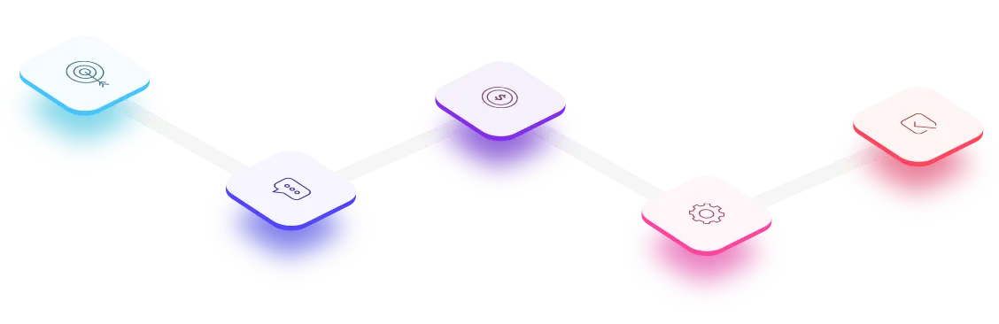

Optimización de Procesos
Transformamos la manera en que opera tu empresa mediante soluciones tecnológicas avanzadas que optimizan tus procesos de negocio, reducen costos operativos y aumentan la productividad de tu equipo.

Automatización Inteligente
Implementamos soluciones que automatizan tareas repetitivas, liberando a tu equipo para enfocarse en actividades de mayor valor.
Análisis de Procesos
Analizamos tus flujos de trabajo actuales para identificar cuellos de botella y áreas de mejora con potencial para optimización.
Integración de Sistemas
Conectamos tus aplicaciones y sistemas existentes para crear flujos de trabajo unificados y eliminar la duplicación de esfuerzos.